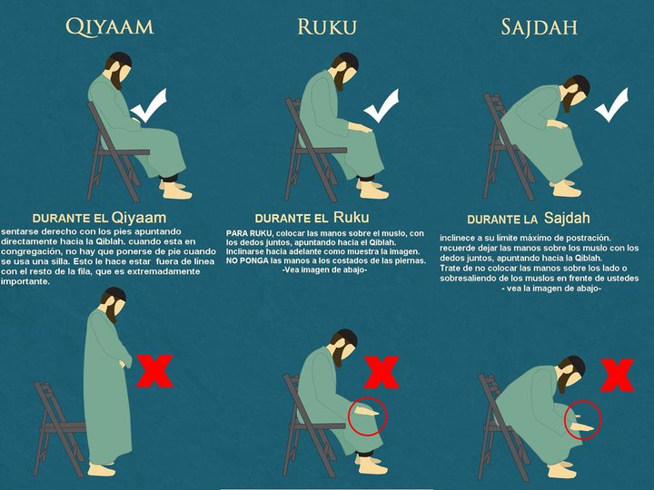

RELIGIÃO
 ISLÁMICOS
ISLÁMICOS
ORAÇÃO ISLÁMICA SALAT ZUHR (MÉDIO DIA )
Quando chega o meio-dia o homem se sente cansado e fatigado pelo trabalho, tendo necessidade de alguma tranqüilidade interior. Por isso, faz a Oração do Meio-Dia, a fim de reanimar o seu organismo.
Faz as abluções e orienta-se logo em direção a Caaba. Encontra-se frente a frente com Deus e esquece as suas fadigas, através da comunicação secreta com seu amado Criador. Recupera então, toda a sua energia espiritual e, uma vez concluída a oração, sente-se livre do cansaço, retornando o trabalho com mais energia e decisão do que antes.

A intenção (niyah) A intenção é uma condição indispensável para validar a salah. O significado da intenção é ter o propósito em mente de adorar a Allah por meio da oração, sabendo, por exemplo, que se trata da salatul maghrib ou ‘isha. Não está legislado que se pronuncie a intenção, entretanto deve ter o propósito em mente. Pronunciá-la é um erro, já que nem o Profeta (que a paz e as bênçãos de Allah estejam com ele), nem seus companheiros o fizeram.
Deve-se estar de pé e dizer: “Allahu akbar” (Allah é o maior), levantando as mãos à altura dos ombros e que as mãos estejam espalmadas em direção à quiblah.
Depois do takbir, coloca-se a mão direita sobre a esquerda e ambas sobre o peito, estando de pé.
É recomendável que se pronuncie a súplica da abertura da salah: “Subhanaka Allahumma wa bihamdika, wa tabaaraka-smuka, wa ta’ala jadduka, wa la ilaha ghairuk” (Glorificado sejas Allah, por Teu louvor, bendito seja Teu nome e elevado seja Teu reino, não há outra divindade além de Ti).
Dizer: “A’udhu billahi minash-Shaitanir-Rajim” (Refugio-me em Allah contra o maldito Satanás).
Deve-se dizer: “bissmillahir-Rahmanir-Rahim” (Em nome de Allah, o Clemente, o Misericordioso), também chamado ‘basmalah’ e seu significado é: “(começo minha oração) Em nome de Allah”.
Recitar o capítulo de Abertura (al-Fatiha), que é o mais grandioso capítulo do Alcorão.
Allah mencionou a Seu mensageiro a revelação deste capítulo, disse Allah: “Temos te concedido sete versículos que se reiteram, assim como o grandioso Alcorão” (Alcorão, Hajar, 15: 87). E foi nomeada assim porque é composta de sete versículos.
É obrigatório que o muçulmano memorize este capítulo, porque sua recitação é um pilar da salah para aqueles que rezam sozinhos ou seguindo o imaam, quando este recita ao dirigir a salah.
Foi legislado que depois da recitação do capítulo al-Fatiha (ou depois de escutar a leitura do imaam) deve-se dizer “Amin”, ou seja, ‘que assim seja’.
Depois deste capítulo, recita-se, nas duas primeiras unidades da salah (ra’kah), outro capítulo ou versículo; já nas terceira e quarta unidades da oração, só se recita al-Fatiha, sem outros versículos do alcorão.
Nas orações do fajr, maghrib e ‘isha, recita-se em voz alta o capítulo al-Fatiha e a recitação seguinte; e recita-se em silêncio nas salah adh-dhuhr e ‘asr.
As outras súplicas que se recitam na salah são em voz baixa.
Depois, realiza-se o takbir, levantando as mãos a altura dos ombros, com as palmas direcionadas à quiblah, tal como no primeiro takbir.
Logo, deve-se prostrar (ruku’), inclinando as costas em direção à quiblah e a cabeça e as costas deve estar no mesmo nível, colocando-se as mãos sobre os joelhos. E dizer: “Subhana rabbi al-Adhim” (Louvado seja Allah, o Mais Grandioso), está recomendado repetir isto por três vezes, mas é suficiente que se diga uma vez. Esta posição (ruku’) representa a glorificação e louvor a Allah.
O significado de “subhana rabbi al-‘Adhim” (Louvado seja Allah, o Mais Grandioso) é negar qualquer atributo de imperfeição para Allah e fazê-lo enquanto se prostra, submetido a Allah, glorificado seja.
Logo, ergue-se novamente, voltando do ruku’, lenvanta-se as mãos à altura dos ombros com as palmas orientadas à quiblah; se está rezando sozinho ou no lugar do imaam, diz: “sami’a Allahu liman hamidah” (Allah escuta àquele que O louva), mas se reza atrás de um imaam, apenas o imaam diz isto. A continuação, seja para quem reze só ou atrás do imaam, é: “rabbana wa lakal-hamd” (Senhor nosso! Para Ti é o louvor). É recomendável acrescentar ao último: “hamdan kathiran taiyiban mubaarakan fih, mil as-sama’i wa mil á al-ard wa mil á shí’ta min bád” (muitos louvores benditos a Ele, que encham os céus, que encham a Terra, que encham tudo o que Tu desejas)
Depois disto se prostra no chão, apoiando sete partes do corpo, que são: a testa e o nariz, as palmas das mãos, os joelhos e os pés. É recomendado que as mãos estejam posicionadas lateralmente, a barriga não esteja encostada nas coxas, as coxas estejam separadas das panturrilhas quando se faz a prostração (sujud), e os antebraços não estejam encostados no chão, senão que deverão estar com os cotovelos levantados.
Quando se está prostrado no solo, deve-se dizer: “Subhana rabbi al-‘Ala” (louvado seja Allah, o Altíssimo) ao menos uma vez, ainda que se recomende repeti-lo por três vezes. Durante a prostração (sujud) é o melhor momento para suplicar a Allah, por isso a pessoa pode suplicar depois de haver recitado as súplicas estabelecidas e pode pedir todo o bem desta e da outra vida. O Profeta (que a paz e as bênçãos de Allah estejam com ele) disse: “O momento em que o servo se encontra mais próximo de seu Senhor é quando está prostrado. Portanto, aumentai ali vossas súplicas” (Muslim, 482).
O significado de “subhana rabbi al-‘Ala” é santificar a Allah por Sua magnificência e Seu poder, pois Ele é o Altíssimo sobre os céus. Portanto, negamos a Ele qualquer atributo de imperfeição. Nesta posição, na qual o servo está prostrado, submetendo-se a Allah, recorda a diferença entre ele e seu Criador e, por isso, se submete e prostra ante o Soberano.
Depois do takbir (dizer: Allahu akbar), senta-se entre as prostrações (sujud), é recomendável que se sente levemente apoiado sobre a perna esquerna, apoiando-se na ponta dos dedos do pé direito e colocando suas mãos sobre as coxas.
É recomendável que cada vez que se sente, ao realizar a oração, o faça desta forma; com exceção de quando se senta ao final da salah, onde a posição recomendada é que apoie a sua perna direita nos dedos do pé, mas a perna esquerda deve estar debaixo da coxa direita, sentando-se no chão, desta forma.
Entretanto, isso não é imprescindível. Quem não puder sentar-se desta forma na oração, por causa de dor nos joelhos ou porque não está habituado, pode se sentar da forma que lhe for mais cômoda.
Quando se senta entre as duas prostrações, deve-se dizer: “Rabbi ighfirli warhamni wahdini warzuqni washbirni wa‘afini” (Senhor meu, perdoa-me, tenha misericórdia de mim, guia-me, proveja (meu sustento), fortaleça-me e proteja-me).
Após, realiza-se a segunda prostração, igual à primeira.
Depois, levanta-se, colocando-se de pé (quiyam) e dizendo: “Allahu akbar” (Allah é o Maior).
E completa esta segunda unidade (ra’kah) como a primeira.
Quando foi completada a segunda prostração, permanecer sentado para fazer o primeiro testemunho da oração (tashahhud), deve-se dizer: “at-tahiyatu lillahi was-salawaatu wat-taiyibat, as-salamu ‘alaika aiyuhan-nabiyu wa rahmatullahi wa barakatuh, as-salamu ‘alaina wa’ala ‘ibadil-lahi as-salihin. Ash hadu an la ilaha illa Allah, wa ash hadu Anna Muhammadan ‘abduhu wa rasuluh” (as saudações, bênçãos e melhores louvores são para Allah. Que a paz esteja sobre ti, ó Profeta! Que a paz esteja sobre nós, sobre os servos de Allah e os justos. Atesto que não há divindade afora Allah e atesto que Muhammad é Seu servo e mensageiro).
Após, levanta-se para completar o resto de sua salah, se esta é composta de três ou quatro ra’kah. Nestas unidades basta apenas recitar o capítulo al-Fatiha.
Mas, se a oração é composta de apenas duas ra’kah, como por exemplo o salatul fajr, deve-se recitar o segundo tashahhud como veremos a seguir.
na última unidade (ra’kah), depois da segunda prostração (sujud), senta-se para ler o último tashahhud – igual ao primeiro, mas acrescido de saudações ao Profeta (que a paz e as bênçãos de Allah estejam com ele), deste modo: “Allahumma salli ‘ala Muhammadin wa ‘ala ali Muhammad, kama sallaita ‘ala Ibrahima wa ‘ala ali Ibrahim, wa barik ‘ala Muhammadin wa á al ali Muhammad, kama barakta ‘ala Ibrahima wa ‘ala ali Ibrahim. Innaka anta Hamidun Majid” (Ó Allah! Saúda a Muhammad e a família de Muhammad como tem saudado a Ibrahim e a família de Ibrahim. Abençoe a Muhammad e a família de Muhammad, como abençoou Ibrahim e a família de Ibrahim, certamente és Louvado, Majestoso).
É recomendado dizer, depois disto, “a’udhu billahi min ‘adhabi jahannam wa min ‘adhabi al-qabr wa min fitnai al mahiya wa mamat wa min fitnai al masihi ad-dajjal” (Refugio-me em Allah do castigo do Fogo e do castigo da sepultura, das tentações e dificuldades da vida e da morte e da tentação do falso messias). Então, pode-se pedir o que deseja.
Então, volta-se o rosto à direita, dizendo “assalamo alaikum wa rahmatullah”(que a paz esteja sobre vós) e faz o mesmo à esquerda. Este ato se chama ‘taslim’.
Com esta saudação, o taslim, termina-se a salah. O Profeta (que a paz e as bênçãos de Allah estejam com ele) disse: “Seu momento começa com o takbir e termina com o taslim” (Abu Dawud, 61 e Tirmidhi, 3).
É recomendável para o muçulmano, ao terminar sua salah obrigatória, dizer as seguintes súplicas:
“Astaghfirullah” (peço perdão a Allah), por três vezes;
“Allahumma anta as-Salam wa minka as-Salam, tabarakta wa ta’alaita, ya Dhal-Jilaali wal-Ikram” (Ó Allah! Tu és a paz e de Ti provêm a paz, bendito e enaltecido sejas, Possuidor da majestade e dignidade).
“subhanallah” (glorificado seja Allah, ‘tasbih’) por 33 vezes; “alhamdulillah” (louvado seja Allah, ‘hamdala’) por 33 vezes e “Allahu akbar” (Allah é o maior, ‘takbir’) por 33 vezes, completando o centésimo com: “la ilaha illa Allah, wahdahu, la sharika lah, lahul-mulk wa lahul-hamd wa huwa ‘ala kulli shai-in qadir” (Não há divindade exceto Allah, não tem parceiros, Sua é toda soberania e louvor e o destino de todas as coisas está em Suas mãos).